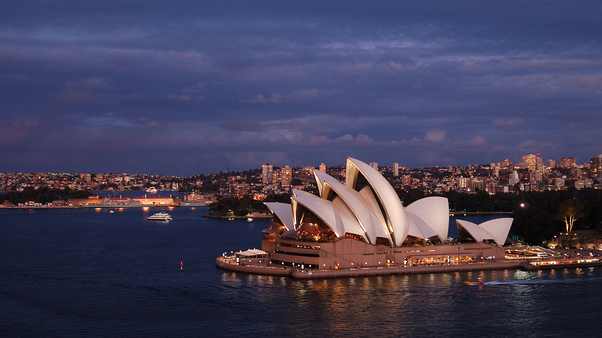

SYDNEY Sydney is the state capital of New South Wales and the most populous city in Australia and Oceania. Located on Australia's east coast, the metropolis surrounds Port Jackson and extends about 70 km (43.5 mi) on its periphery towards the Blue Mountains to the west, Hawkesbury to the north, the Royal National Park to the south and Macarthur to the south-west. Sydney is made up of 658 suburbs, 40 local government areas and 15 contiguous regions. Residents of the city are known as "Sydneysiders". As of June 2019, Sydney's estimated metropolitan population was 5,312,163, meaning the city is home to approximately 65% of the state's population.
 HOME